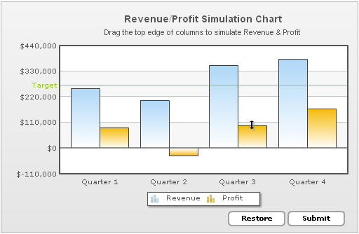

| Reading data using JavaScript | ||||||||||||||||||||||||||||||
In our previous section, we had seen how to submit the updated data from chart to a Server-side script as form elements. Here, we will see how to read the updated data using JavaScript functions present on the same page. Code samples discussed in this section is present in Download Package > Code > DragColumn folder. |
||||||||||||||||||||||||||||||
After the chart is rendered, whenever we need access to chart's latest data as array, we can simply call the following function on the chart: //Get a reference to our chart var ourChart = FusionCharts("SelectChart"); //Now get the data as array. var arrData = ourChart.getDataWithId(); We first need to get a reference to the chart object. We do so using FusionCharts item reference method. Next, to get the data as array, we simply call the getDataWithId method of the chart. This method returns the data of chart in a 3-dimensional array. The structure of the array is as under: |
||||||||||||||||||||||||||||||
|
||||||||||||||||||||||||||||||
To make things simpler, let us consider the following XML: <chart palette='1' caption='Revenue / Profit Simulation Chart' subcaption='Drag the top edge of columns to simulate revenue and profit'
showvalues='0' xAxisName='Quarter' yAxisName='Dollars' numberPrefix='$' formatNumberScale='1'
defaultAnimation='0' showFormBtn='0'>
<categories>
<category label='Quarter 1' />
<category label='Quarter 2' />
<category label='Quarter 3' />
<category label='Quarter 4' />
</categories>
<dataset id='R' seriesName='Revenue' allowNegativeDrag='0'>
<set id='R1' value='3554800' />
<set id='R2' value='3014800' />
<set id='R3' value='2737200' />
<set id='R4' value='3540700' />
</dataset>
<dataset id='P' seriesName='Profit'>
<set id='P1' value='870000' />
<set id='P2' value='-419400' />
<set id='P3' value='452600' />
<set id='P4' value='717300' allowNegativeDrag='0'/>
</dataset>
<trendlines>
<line startValue='2800000' endValue='3500000' color='009900' displayValue='Target' isTrendZone='1' alpha='10' valueOnRight='1'/>
</trendlines>
<styles>
<definition>
<style name="myCaptionFont" type="font" font="Arial" size="14" bold="1" />
<style name="mySubCaptionFont" type="font" font="Arial" size="10" bold="0" />
</definition>
<application>
<apply toObject="Caption" styles="myCaptionFont" />
<apply toObject="SubCaption" styles="mySubCaptionFont" />
</application>
</styles>
</chart>
This XML generates a chart as under:  Now, without editing this data visually, if you return the data of chart as array using the getDataWithId() method of the chart object, the tabular mapping of returned array can be traced as under: |
||||||||||||||||||||||||||||||
|
||||||||||||||||||||||||||||||
If you map this with XML, you will find the following:
|
||||||||||||||||||||||||||||||
| getData() function | ||||||||||||||||||||||||||||||
Similar to getDataWithId() function is getData() function, but with one dimension of data less. Unlike getDataWithId() method, that returns both the id and updated value of each data on the chart, this method just returns the value of each data. Thus, the return array is now converted into a 2-dimensional array, where each data cell just contains a numeric value representing the final value of data on the chart. The tabular mapping of array returned by this method can be traced as under: |
||||||||||||||||||||||||||||||
|
||||||||||||||||||||||||||||||
Fairly simple. We just have the values now in each data cell, which can be directly accessed by the index of the 2-dimensional array. See it live! |
||||||||||||||||||||||||||||||
| Reading XML Data from the chart | ||||||||||||||||||||||||||||||
The chart also provides a method to read the updated data in XML format. This method is named as getXMLData() and can be invoked as under: //Get a reference to our chart var ourChart = FusionCharts("SelectChart"); //Get the data from chart var xmlRtn = ourChart.getXMLData(); //Show it to user in alert box. alert(xmlRtn); |
||||||||||||||||||||||||||||||
| The function getXMLData()returns the latest or updated data. This function is also used to retrieve the original data from the chart. To get the original data from the chart you need to pass false as a parameter to the function. For example, var xmlRtn = ourChart.getXMLData(false); | ||||||||||||||||||||||||||||||
| Managing chart limits using JavaScript API | ||||||||||||||||||||||||||||||
|
You can also set the drag-able charts' upper and lower limits using JavaScript APIs. Moreover, you can also retrieve the current upper and the lower limits of the chart using JavaScript APIs. The functions used to achieve these are:
Examples: Set Limits: // Proposed upper limit var newUpperLimit = 100000; var newLowerLimit = -5000; //Get a reference to our chart var ourChart = FusionCharts("PredictionChart"); //Set the upper Limit and confirm var status = ourChart.setUpperLimit( newUpperLimit ); //Show the status to user in alert box. alert(status ? "The upper limit has been successfully set to " : "Failed setting the upper limit to ") + newUpperLimit; //Set the lower Limit and confirm status = ourChart.setLowerLimit( newLowerLimit ); //Show the status to user in alert box. alert(status ? "The lower limit has been successfully set to " : "Failed setting the lower limit to ") + newUpperLimit; Get Limits: //Get a reference to our chart var ourChart = FusionCharts("PredictionChart"); //get the current Upper Limit and Lower limit var latestUpperLimit = ourChart.getUpperLimit(); var latestLowerLimit = ourChart.getLowerLimit(); //Show the status to user in alert box. alert( "The current upper limit is: " + latestUpperLimit + ", and the current lower limit is:" + latestLowerLimit); |
||||||||||||||||||||||||||||||
| Example Application in Code Download | ||||||||||||||||||||||||||||||
|
Using all this information, we have built a simple example where we pull data from chart and render it dynamically in tabular format at Client-side using JavaScript. The code for this is contained in Chart.html in Download Package > Code > DragColumn folder. See it live! |